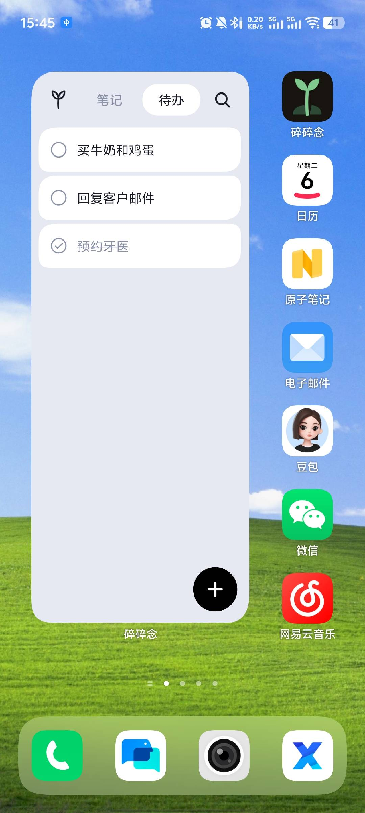
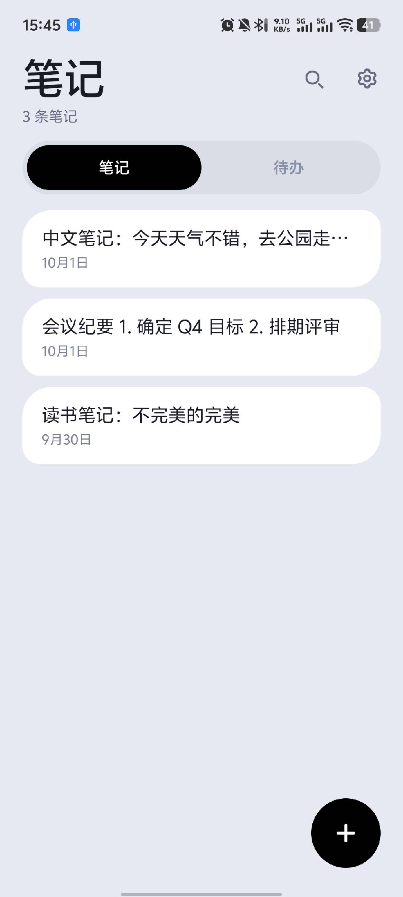
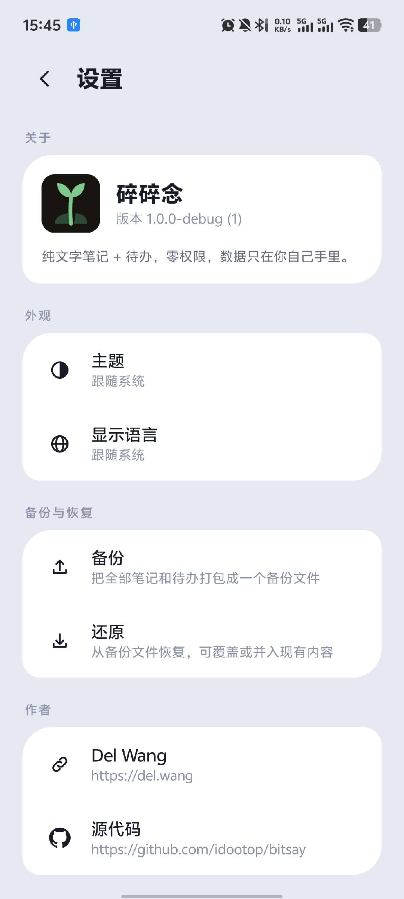
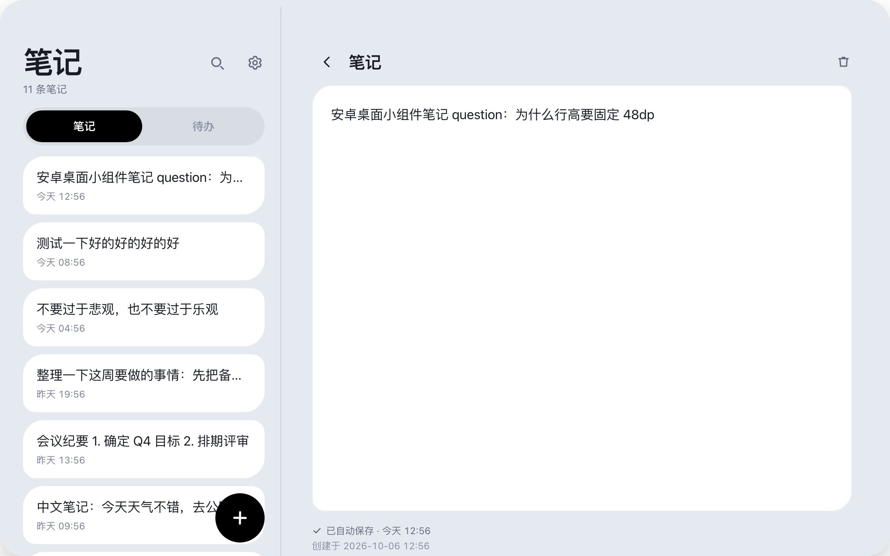

桌面小组件 · 笔记列表 · 设置
为什么选它
一目了然，一触即达。
桌面就能用
小组件就是主界面。看列表、勾完成，都不用打开 App。
随手就能记
点一下加号就能写，边写边存，没有保存按钮。
数据不会丢
自动保存。还能导出备份，换手机时导入就行。
不要任何权限
不联网，也不读取任何东西。笔记只存在你手机里。
桌面小组件
抬眼就能看到。
笔记和待办一键切换，重要的事情一目了然。
桌面小组件
笔记与待办
笔记，一段话。待办，一个圈。
笔记和待办都是纯文本，支持搜索全文匹配。
一条笔记就是一段话
多屏适配
大屏幕上，左右并排。
左边看列表，右边改内容，大屏操作更高效。

手机、平板、折叠屏全适配
常见问题
你可能想知道的
支持哪些手机？
Android 12 及以上都可以。
要收费吗？
不收费，没有广告，也不用注册登录账号。
会上传我的数据吗？
不会。App 不联网，也没有任何权限，笔记只保存在你手机里。
数据会丢吗？
不会。边写边存，锁屏、关机都不会丢。也可以随时导出备份。
换手机怎么办？
在设置里导出备份，新手机上选中那个文件还原就行。
怎么添加到桌面？
长按桌面空白处，选择「添加小部件」，找到「碎碎念」拖到桌面上。
拉动边缘可以调整组件大小和显示行数。
能加图片或者分类吗？
不能。一条笔记就是一段文字，我们想让这件事一直简单下去。
开源吗？
开源，MIT 协议，代码都在 GitHub 上。